钢笔工具 in Photoshop
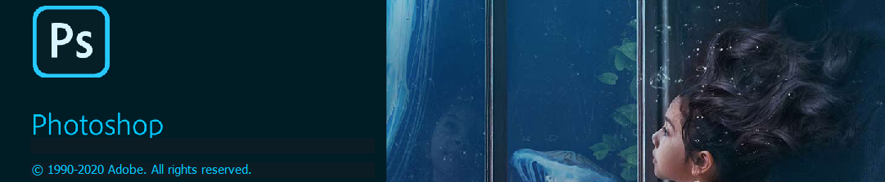
钢笔工具是 PS 中最常用的工具之一。它的主要功能是绘制：直线 曲线 形状 路径等。
实际使用最频繁的就是通过绘制路径分离主体，也就是抠图。下面介绍钢笔工具的使用方法。
切换到钢笔工具可以使用快捷键 P，或者在工具栏里点击钢笔：
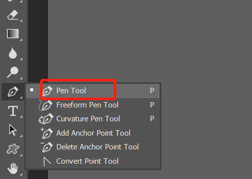
上方设置栏可以设置模式：sharp path pixels：
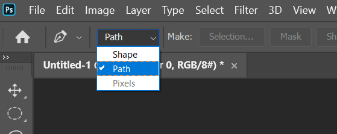
sharp 就是填充绘制的区域，path 就是只是路径而不填充，pixels 就是以像素模式运行。前两种都是矢量的模式，所以放大缩小不会影响到绘制效果，第三种就会在后续调整中受到影响所以不要设置，想要 sharp 的效果可以在 path 后手动填充即可，所以只推荐设置为 path。
最基础的用法就是点击各个边沿绘制路径，下面正方形，通过点击四个顶点来绘制路径：
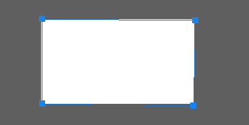
但是如果遇到曲线的地方，想要匹配路径就需要绘制曲线 path，在点击后拖拽就可以绘制曲线：
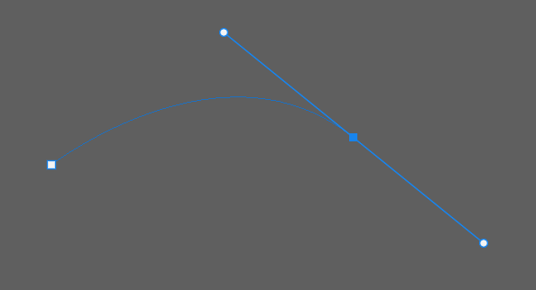
曲线锚点有两个控制端，分别控制锚点前一段和后一段的曲线效果：
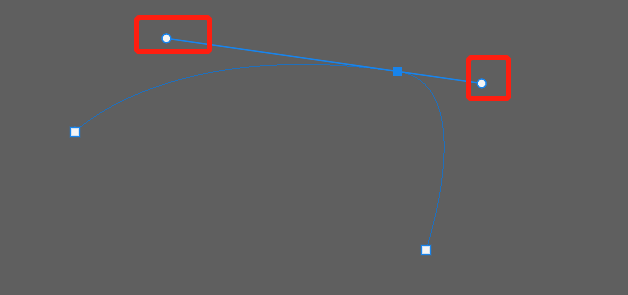
正常情况下两个控制端是在一条线上的，旋转的时候互相影响。
对于尖角的图形，绘制的时候两个控制端需要分离设置，按住 alt 键拖动某个控制端可以切断联系，单独移动控制：
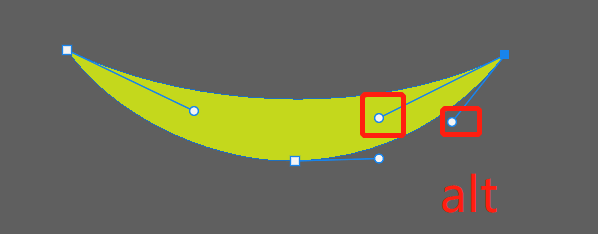
想要移动锚点或控制端，按住 ctrl 键拖动锚点或控制端：
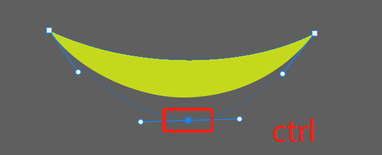
如果想要删除某个锚点的控制端，按住 alt 键点击锚点，要给某个锚点添加控制端，按住 alt 键拖动锚点：
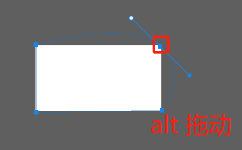
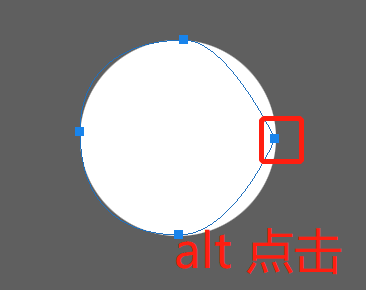
如果要绘制垂直水平或 45 度标准倾斜的控制端，按住 shift 键建立锚点：
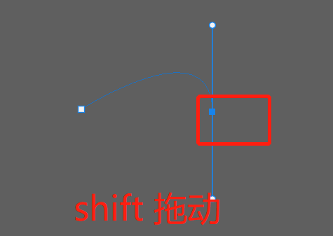
在绘制完封闭的曲线后，默认锚点会消失，想要重新看到锚点进行调整的话，只需要按住 ctrl 点击曲线任意地方即可。
绘制完曲线后，想要建立 sharp，只需要新建 solid color 图层即可，后续调整曲线，填充区域也会跟着变化：
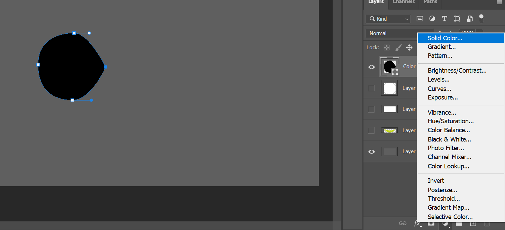
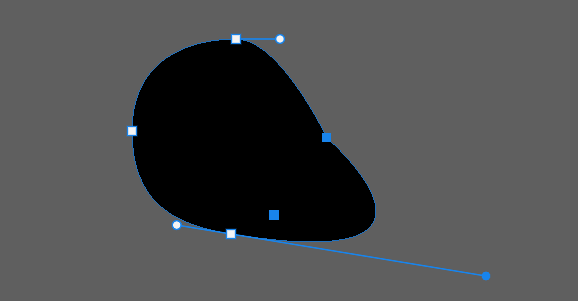
绘制完成后，path 会在右侧显示：
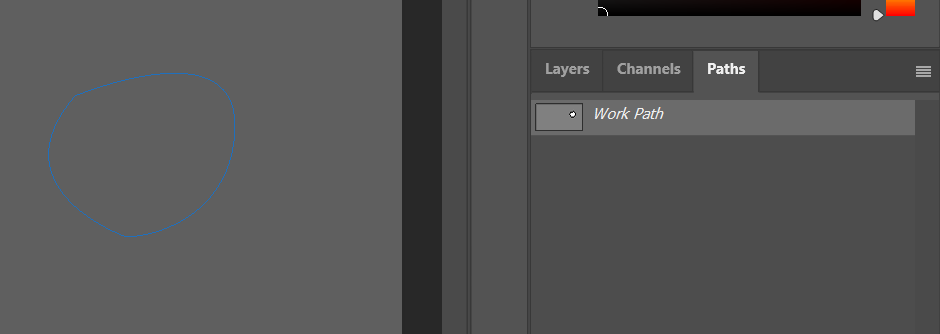
取消选择右侧的 path 图层，当前绘制的就会隐藏，需要的时候回到这个图层，点击 path 里的图层即可。
在主体绘制路径中，比较常用的流程是，使用点将大概区域选出，然后通过添加控制端，移动锚点，打断控制端联系等操作来精确进行绘制。一个原则是使用尽可能少的点来确定区域。
有一个在线的练习网站可以练手：https://bezier.method.ac/
标签：无
好详细哦。